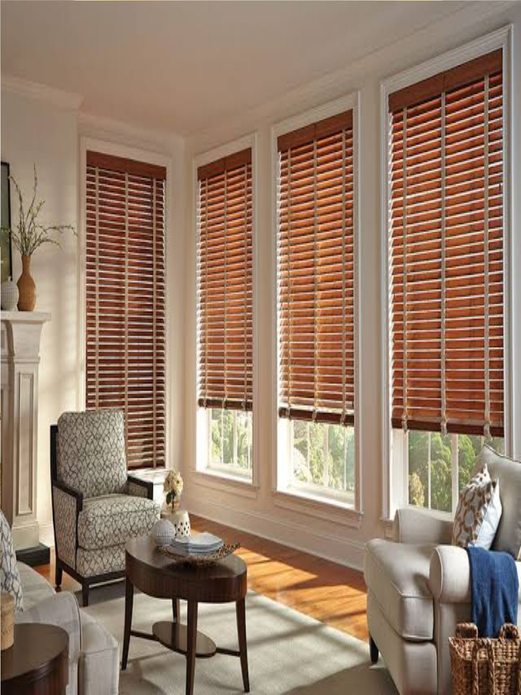
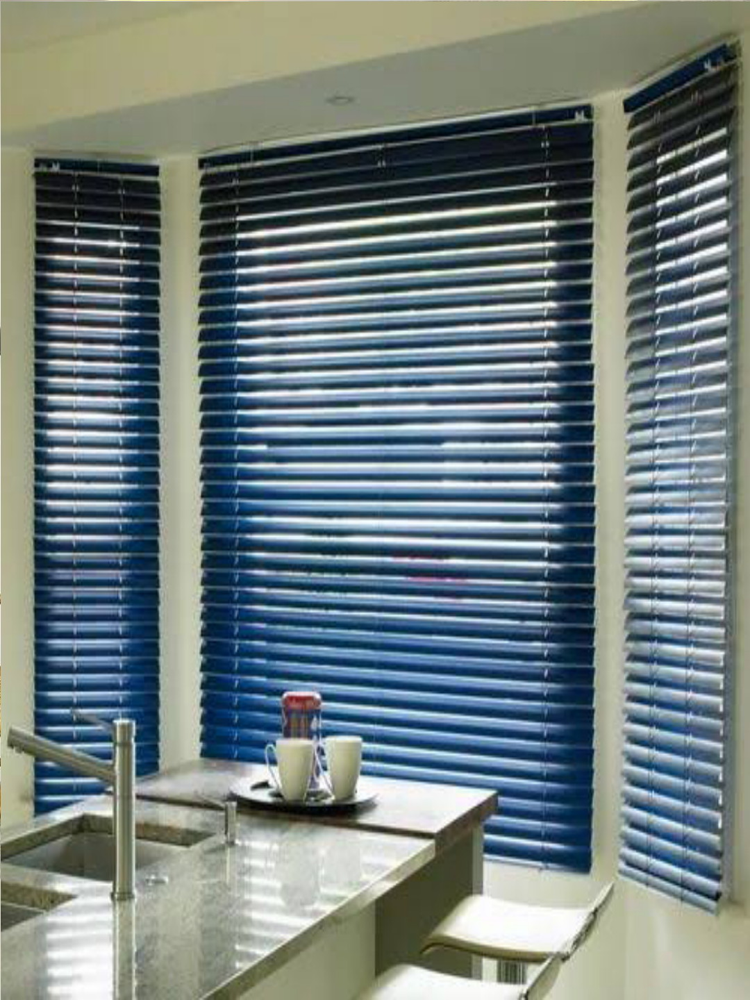
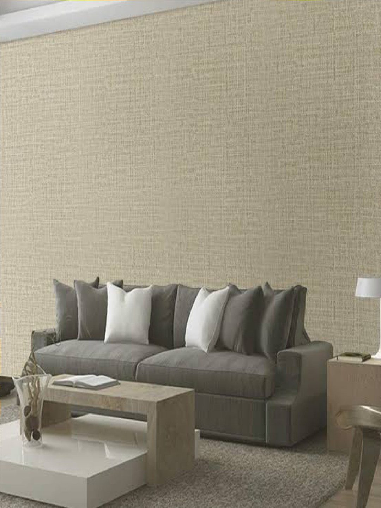

Katalog Produk Kami
Gorden


Aksesoris Gorden
Blinds
Roller Blinds By SharpPoint
Jenis tirai atau penutup jendela yang bekerja dengan cara menggulung kain atau material tertentu di atas tabung atau roller.

Vertical Blinds By SharpPoint
Tirai jendela dengan bilah-bilah yang menggantung secara vertikal (dari atas ke bawah).

Wooden Blinds By SharpPoint
Jenis tirai jendela yang terbuat dari bilah-bilah kayu yang dipasang secara horizontal.

Venetian Blinds By SharpPoint
Penutup jendela yang terdiri dari bilah horizontal yang dapat diputar atau diatur untuk mengatur cahaya dan privasi.
Wallpaper

Wallpaper Motif Bunga
Memberikan kesegaran dan keindahan alami pada ruangan.

Wallpaper Polos Tekstur
Tampilan minimalis namun tetap berkelas dan modern.